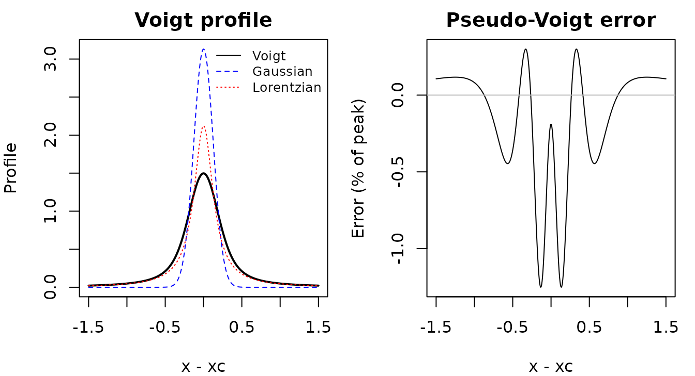
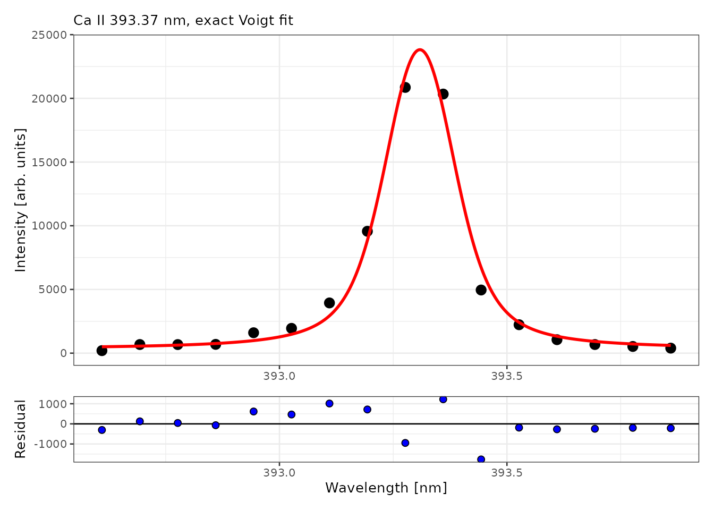
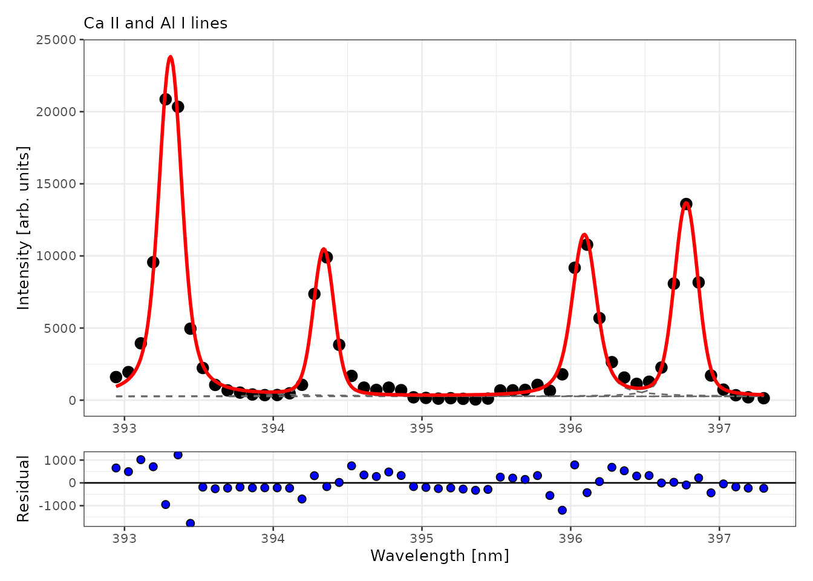

Integrating the counts in a fixed window around a line is simple, but it mixes the line with its neighbours and the local background. Fitting a line profile separates overlapping lines and gives the line area, center and widths as parameters, with standard errors. This vignette shows how to fit single and overlapping lines with specProc, how to choose a profile, and how far the fitted standard errors can be trusted.
library(specProc)
data(specLIBS)
meta <- specLIBS[1:8]
X <- as.matrix(specLIBS[-(1:8)])
wl <- as.numeric(colnames(X))
# Baseline-corrected counts (see vignette("preprocessing"))
Xb <- as.matrix(baseline_arpls(X, lambda = 1e5, max.iter = 20)$correction)Line profiles
An emission line in a laser-induced plasma is broadened by several mechanisms. Doppler and instrumental broadening give a Gaussian profile, while Stark (pressure) and natural broadening give a Lorentzian profile. When both are present, the line has a Voigt profile, the convolution of the two. specProc provides four unit-area profiles, parametrized by their full widths at half maximum (FWHM):
| Function | Profile | Parameters |
|---|---|---|
gaussian_profile() |
Gaussian | wG |
lorentzian_profile() |
Lorentzian | wL |
voigt_profile() |
exact Voigt (C++, Faddeeva function) |
wG, wL
|
pseudo_voigt_profile() |
Thompson–Cox–Hastings pseudo-Voigt |
wG, wL
|
The pseudo-Voigt is a weighted sum of a Gaussian and a Lorentzian that approximates the Voigt profile. It is faster to compute, but it is an approximation:
x <- seq(-1.5, 1.5, length.out = 500)
v <- voigt_profile(x, y0 = 0, xc = 0, wG = 0.3, wL = 0.3, A = 1)
pv <- pseudo_voigt_profile(x, y0 = 0, xc = 0, wG = 0.3, wL = 0.3, A = 1)$y
op <- par(mfrow = c(1, 2), mar = c(4, 4, 2, 1))
plot(x, v, type = "l", lwd = 2, ylim = c(0, max(gaussian_profile(x, 0, 0, 0.3, 1))),
xlab = "x - xc", ylab = "Profile", main = "Voigt profile")
lines(x, gaussian_profile(x, 0, 0, 0.3, 1), lty = 2, col = "blue")
lines(x, lorentzian_profile(x, 0, 0, 0.3, 1), lty = 3, col = "red")
legend("topright", c("Voigt", "Gaussian", "Lorentzian"), lty = 1:3,
col = c("black", "blue", "red"), bty = "n", cex = 0.8)
plot(x, (pv - v) / max(v) * 100, type = "l", xlab = "x - xc",
ylab = "Error (% of peak)", main = "Pseudo-Voigt error")
abline(h = 0, col = "grey")
par(op)For equal Gaussian and Lorentzian widths, the pseudo-Voigt deviates from the exact profile by about 1% of the peak height. That is small, but it is systematic, and it biases the fitted widths when the data are precise.
Fitting a single line
peak_fit() takes spectra in rows, with the wavelengths
as column names. It fits the model y = y_0 + A
\cdot f(x; x_c, w) to each spectrum by Levenberg–Marquardt least
squares. Starting values are estimated from the data unless you supply
them.
We fit the Ca II 393.37 nm line in the mean spectrum of the first sample, using each of the four profiles:
first <- meta$Sample == meta$Sample[1]
window <- wl > 392.6 & wl < 393.9
line_data <- as.data.frame(t(colMeans(Xb[first, window])))
names(line_data) <- wl[window]
profiles <- c("gaussian", "lorentzian", "pseudo_voigt", "voigt")
fits <- lapply(profiles, function(p) peak_fit(line_data, profile = p))
names(fits) <- profiles
comparison <- data.frame(
profile = profiles,
parameters = sapply(fits, function(f) length(stats::coef(f$fit[[1]]))),
AIC = sapply(fits, function(f) round(stats::AIC(f$fit[[1]]), 1)),
area = sapply(fits, function(f) round(stats::coef(f$fit[[1]])[["A"]])),
area_SE = sapply(fits, function(f) round(summary(f$fit[[1]])$coefficients["A", 2])),
row.names = NULL
)
comparison
#> profile parameters AIC area area_SE
#> 1 gaussian 4 270.7 4572 225
#> 2 lorentzian 4 269.6 6567 446
#> 3 pseudo_voigt 5 268.6 5802 701
#> 4 voigt 5 267.4 5677 666The exact Voigt profile has the lowest AIC, but by only 1 to 3 units, so the evidence for it over the other profiles is modest. The reason is resolution: the channels are about 0.084 nm apart and the line FWHM is about 0.2 nm, so each line is sampled by only 2 to 3 channels across its half width. With 16 points, the shapes of the profiles are hard to tell apart.
The fitted area differs markedly between profiles, by more than 40% between the Gaussian and the Lorentzian fits. The Lorentzian’s heavy wings extend beyond the fitted window, and the area estimate extrapolates them. The profile choice is a source of systematic uncertainty in the line area, much larger than its standard error. The Voigt fit:
fits$voigt$tidied[[1]]
#> # A tibble: 5 × 5
#> term estimate std.error statistic p.value
#> <chr> <dbl> <dbl> <dbl> <dbl>
#> 1 y0 328. 442. 0.742 4.73e- 1
#> 2 xc 393. 0.00333 118279. 1.98e-51
#> 3 wG 0.130 0.0422 3.08 1.05e- 2
#> 4 wL 0.0921 0.0477 1.93 7.95e- 2
#> 5 A 5677. 666. 8.53 3.53e- 6
plot_fit(fits$voigt, title = "Ca II 393.37 nm, exact Voigt fit")
How precise are the fitted parameters?
The standard errors in the table are asymptotic least-squares standard errors. They assume a correct model and residuals that are independent, identically distributed and Gaussian. In LIBS data, the noise follows photon-counting (Poisson-like) statistics, the plasma itself varies from shot to shot, and the profile model is only approximate.
Each sample was measured at 8 locations, so we can compare the model standard errors with the actual spread of the fitted areas across replicates. We fit the four lines of the 393–397.3 nm region in each of the 8 shots of the first sample (the joint fit is explained in the next section):
window2 <- wl > 392.9 & wl < 397.3
shots <- as.data.frame(Xb[first, window2])
names(shots) <- wl[window2]
shots$shot <- seq_len(nrow(shots))
centers <- c(393.37, 394.40, 396.15, 396.85)
per_shot <- multipeak_fit(shots, peaks = centers, profiles = "voigt", id = "shot")
get <- function(term, what) sapply(per_shot$tidied, function(t) t[[what]][t$term == term])
precision <- data.frame(
line = c("Ca II 393.37", "Al I 394.40", "Al I 396.15", "Ca II 396.85"),
mean_area = sapply(paste0("A_", 1:4), function(a) mean(get(a, "estimate"))),
model_SE = sapply(paste0("A_", 1:4), function(a) median(get(a, "std.error"))),
replicate_SD = sapply(paste0("A_", 1:4), function(a) sd(get(a, "estimate"))),
row.names = NULL
)
precision[-1] <- round(precision[-1])
precision
#> line mean_area model_SE replicate_SD
#> 1 Ca II 393.37 5723 335 204
#> 2 Al I 394.40 1947 292 67
#> 3 Al I 396.15 2788 333 154
#> 4 Ca II 396.85 2920 295 76Here the model standard errors are larger than the replicate standard deviations. Part of the residual variance comes from model misfit rather than noise. This misfit is essentially the same in every shot, so it inflates the standard errors without making the areas less reproducible.
Combining this with the profile comparison above gives three sources of uncertainty for a line area, in increasing order of size:
- Replicate variability (a few percent): the reproducibility of the measurement.
- The model standard error (about 5 to 15% here): a model-based quantity that mixes noise and misfit.
- The choice of profile (tens of percent): systematic, and invisible to both of the above.
The practical consequences:
- Use the same profile and fitting window for every spectrum in a study. A systematic profile bias then affects all samples alike, and it largely cancels in a calibration against reference samples.
- Report the reproducibility from replicates, for example the standard error \mathrm{SD}/\sqrt{8} of the mean area.
- Treat absolute line areas as dependent on the profile, for example when comparing them with theoretical intensities.
Overlapping lines
Between 393 and 397.3 nm, the Ca II 393.37 and 396.85 nm lines and
the Al I 394.40 and 396.15 nm lines are close enough that their wings
overlap. multipeak_fit() fits all of them simultaneously on
a common baseline offset. The parameters of line i carry the suffix _i:
region <- as.data.frame(t(colMeans(Xb[first, window2])))
names(region) <- wl[window2]
multi <- multipeak_fit(region, peaks = centers, profiles = "voigt")
multi$tidied[[1]]
#> # A tibble: 17 × 5
#> term estimate std.error statistic p.value
#> <chr> <dbl> <dbl> <dbl> <dbl>
#> 1 y0 259. 199. 1.30 2.00e- 1
#> 2 xc_1 393. 0.00246 159704. 6.53e-161
#> 3 wG_1 0.129 0.0257 5.01 1.46e- 5
#> 4 wL_1 0.0941 0.0265 3.56 1.07e- 3
#> 5 A_1 5722. 337. 17.0 9.25e- 19
#> 6 xc_2 394. 0.00529 74531. 5.37e-149
#> 7 wG_2 0.144 0.0423 3.39 1.68e- 3
#> 8 wL_2 0.0373 0.0569 0.655 5.16e- 1
#> 9 A_2 1945. 292. 6.65 9.43e- 8
#> 10 xc_3 396. 0.00534 74157. 6.44e-149
#> 11 wG_3 0.141 0.0466 3.03 4.52e- 3
#> 12 wL_3 0.0893 0.0536 1.66 1.05e- 1
#> 13 A_3 2788. 336. 8.29 7.21e- 10
#> 14 xc_4 397. 0.00426 93171. 1.74e-152
#> 15 wG_4 0.162 0.0314 5.15 9.47e- 6
#> 16 wL_4 0.0443 0.0427 1.04 3.07e- 1
#> 17 A_4 2917. 297. 9.84 9.61e- 12
plot_fit(multi, title = "Ca II and Al I lines")
Look at the Lorentzian widths wL_2, wL_3
and wL_4: their standard errors are comparable to or larger
than the estimates themselves. The data cannot separate the Lorentzian
from the Gaussian broadening for these lines, so the two widths are not
identifiable from these spectra, only their combination is. The
line areas, which are usually what matters for quantitative analysis,
remain well determined. When individual widths matter, for example to
estimate the electron density from Stark broadening, use lines with a
higher signal-to-noise ratio. Alternatively, fix the instrumental
Gaussian width from a calibration measurement.
Summary
- Choose the profile from the data. Compare the AIC on representative spectra, and look at the residuals. Expect modest differences when lines are sampled by only a few channels.
- Keep the profile and window fixed across a study. The profile choice is the largest source of uncertainty in absolute line areas.
- Take reproducibility from replicates. Model standard errors mix noise with misfit, and can be larger or smaller than the replicate spread.
- Check identifiability before interpreting a parameter. A parameter whose standard error is as large as its estimate is not determined by the data.